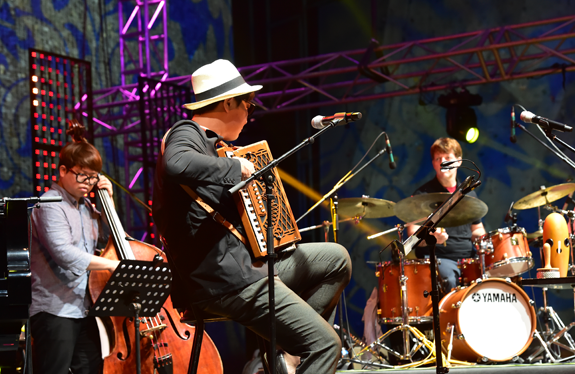

축제에는 음악이 빠질 수 없고
음악에는 축제가 빠질 수 없다


- 수원 재즈 페스티벌
- 수원 재즈 페스티벌은 대한민국 최고경관으로 꼽힌 '광교호수공원'을 배경으로 펼쳐집니다. 축제가 펼쳐지는 이틀간 국내·외 재즈아티스트들이 모여 편안하고 감미로운 정통재즈부터 남녀노소 누구나 편안하게 즐길 수 있는 재즈까지 풍성한 음악으로 가을하늘을 가득 채웁니다.
- 자라섬 재즈 페스티벌
- 올해로 벌써 19회를 맞은 자라섬 재즈 페스티벌은 2021년에도 코로나19에 맞서 철저한 방역을 지키며 18회 자라섬 재즈 페스티벌을 마무리했지만 이번엔 좀 더 완화된 사회적 거리두기로 인해 자유롭게 즐길 수 있을 예정입니다. 이 페스티벌은 2004년에 시작한 한국의 대표 재즈 페스티벌입니다.
- 워터밤
- 매해 2만명 이상의 관객을 동원하는 ‘워터밤’은 관객이 각자 원하는 팀 컬러를 선택해 워터파이팅을 즐기는 블록버스터 뮤직 페스티벌입니다. 매해 성황리에 개최되어 여름 대표 페스티벌로 자리를 잡았으며 이에 힘입어 올해부터는 6개 도시로 개최지를 늘려 전국투어를 진행합니다. 내 마음에 드는 도시를 찾아 축제를 즐겨볼까요?